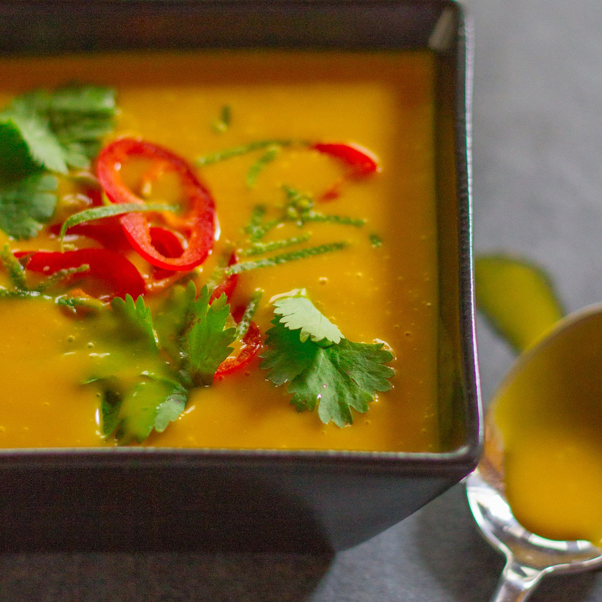

Pumpkin Soup

Pumpkin Soup
This soup is vegan and very flavorful. It is perfect to prep before service!
Ingredients
- 3 tablespoons neutral oil (Canola, Vegetable, Grapeseed)
- 1 small shite onion, chopped
- 2 cloves garlic, minced
- 1 tablespoon grated ginger
- 1 stalk of lemongrass, bruised and chopped into disks
- 3 tablespoons Thai red curry paste
- 1 15oz can of pumpkin puree
- 2 cups vegetable broth
- Kosher salt
- 1 14oz can of unsweetend coconut milk
- 2 tablespoons fresh lime juice
- Fresh cilantro for garnish
Steps
- In a pan, heat oil over medium heat. Add onion and saute until onions are translucent, approximately 5 minutes.
- Add garlic, ginger and lemongrass, saute for 1 minute
- Add curry paste and saute for an additional 3 minutes
- Remove pan from heat and pour curry mixture into blender
- Add pumpkin puree, vegetable broth, and salt to taste and blend until smooth
- If you are serving the soup the next day, bottle and refrigerate
- 30 minutes before service place soup in a pot over medium heat
- Stir in coconut milk and fresh lime juice, allow to warm for about 20 minutes. Allow to simmer but avoid boiling
- Serve with chopped cilantro, roasted pumpkin seeds and chopped chilis